镜像烧录+ssh远程登录
1.系统安装
1.1启动设置
选择SD卡启动，首先需要将启动拨码开关配置成SD卡启动模式，配置方法如下图：
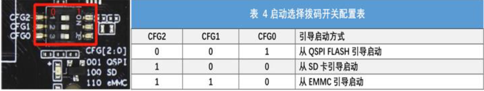
1.2镜像下载
**下载地址：**通过如下百度云盘链接或者联系销售获取到镜像，镜像链接：https://pan.baidu.com/s/1pStiyqohrB3SxHAFFk8R6Q 提取码：dzdv
==注意：==镜像需下载对应内存大小的版本，目前 4GB DDR使用长鑫存储（ CXMT）的颗粒 ，2GB DDR使用兆易创新（ GigaDevice）的颗粒，如果不清楚开发板是哪个容量的 DDR，可通过DDR颗粒的上丝印字样来判断。我们拿到的是最拉的板子4GB的V2.2版本的开发板。
4GB-V2.2可以选择的镜像：(按照更新的时间来排序的)
xfce_v2.1_4GB_231116.tar.gz
xfce_v2.1_4GB_240123.tar.gz
飞腾派v2.1_4GB_240517.tar.gz
本次项目选择的是xfce_v2.1_4GB_240123.tar.gz，不新不老。
1.3镜像烧录
准备一张存储空间 32G以上的 SD卡（如果需要使用Anaconda配置虚拟环境的话建议越大越好）、一个 USB读卡器
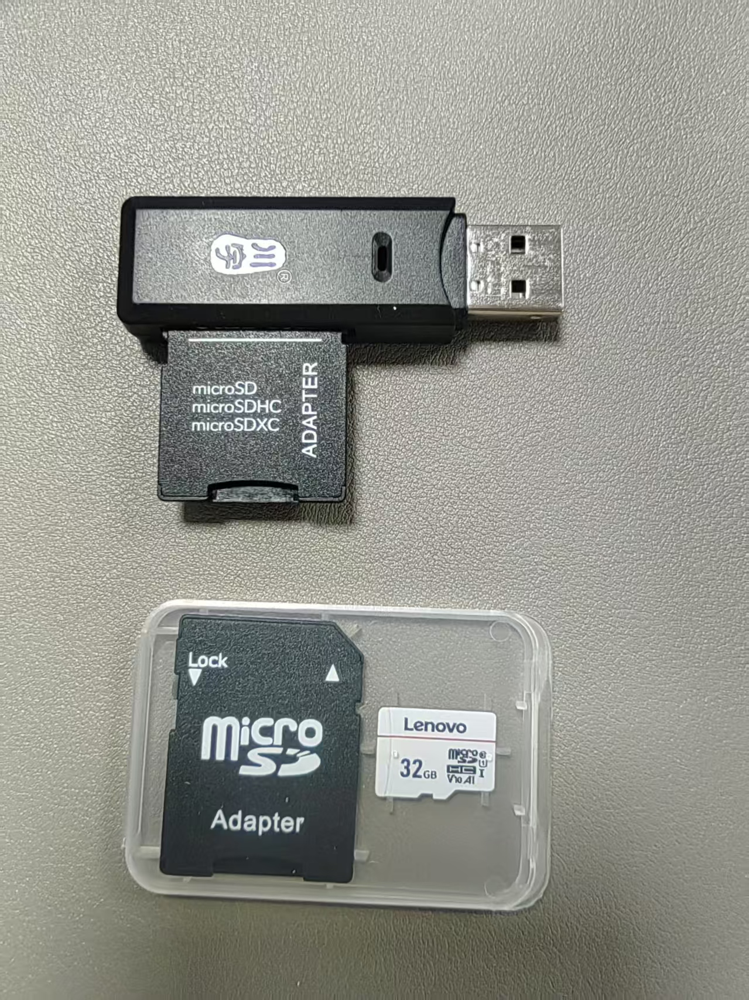①插入电脑之后需要先格式化磁盘
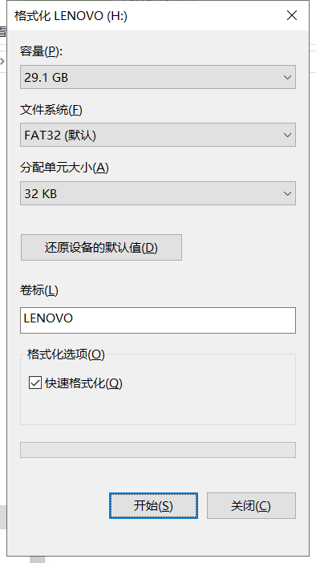②安装烧录软件Win32DiskImager2.0.1.8.exe
③选择磁盘，选择要烧录的镜像
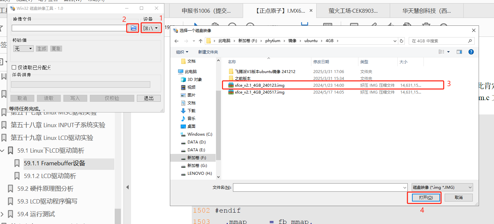④烧录镜像
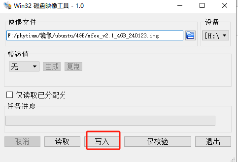⑤烧录完成
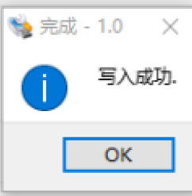⑥校验烧录（无关）
烧录完点击“仅校验”确认烧录正确，若校验成功，可进行下一步
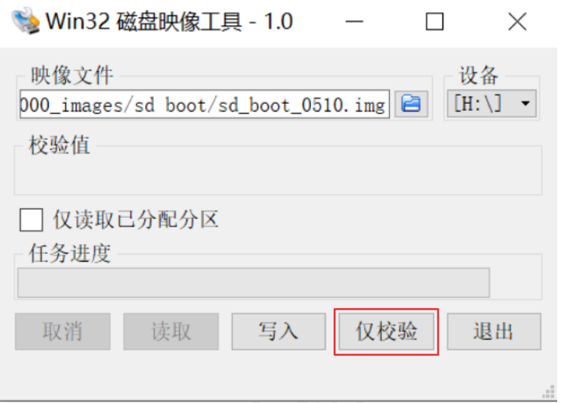⑦安装 SD卡
烧录完成后安装到 SD卡槽即可上电启动，注意要将启动模式设置为 SD卡启动。
2. SSH登录
2.1软件安装
本项目使用的为：MobaXterm，是免费的网络上随便安装一个就行
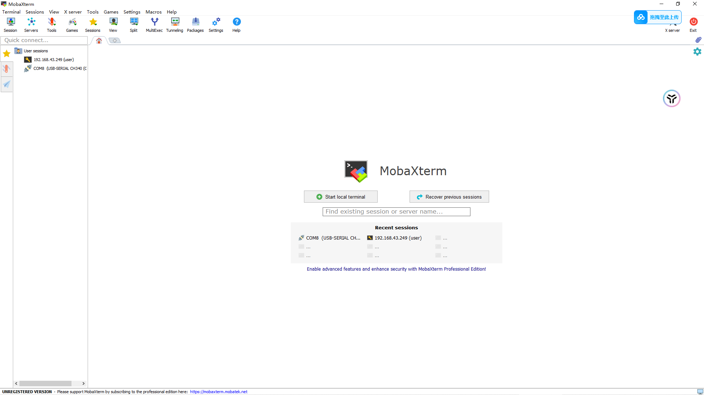
2.2开发板wifi连接
飞腾派烧录sd启动之后，连接一个显示器，找到wifi连接的地方打开连接一个wifi，最好自己开个热点，不要选教研室的wifi。
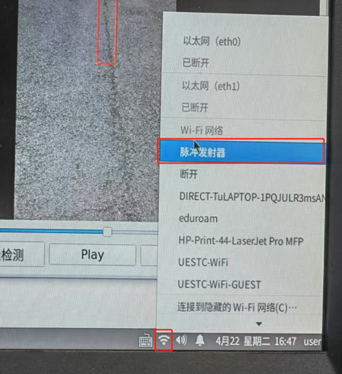查看飞腾派ip地址
1 | ifconfig |
2.3主机端ssh连接
主机端的wifi需要和飞腾派的wifi一致
2.3.1打开MobaXterm
建立一个ssh的应用界面，
Remote host输入飞腾派的ip地址，
Specify username输入你自己安装镜像的用户名（官方提供的镜像ubuntu系统用户名为：user，密码为:user；openkylin系统用户名是：kylin，密码为：自己去查）
Port默认是22
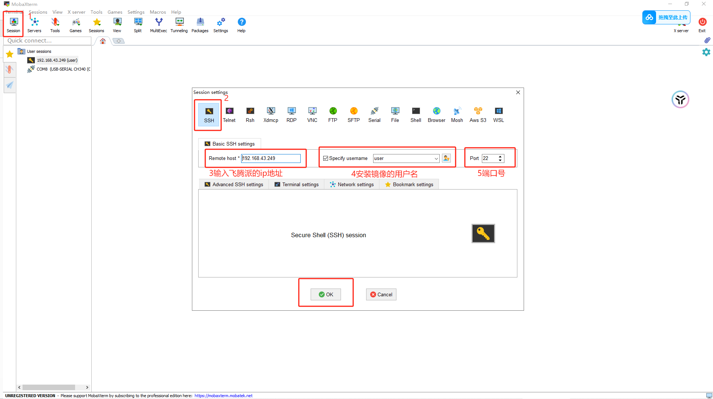
首次使用会弹窗要求设置master password，即打开会话的密码。为了方便输入镜像的用户名和密码即可
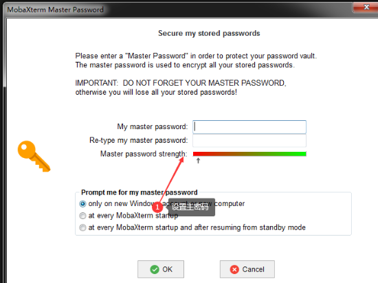
成功配置!
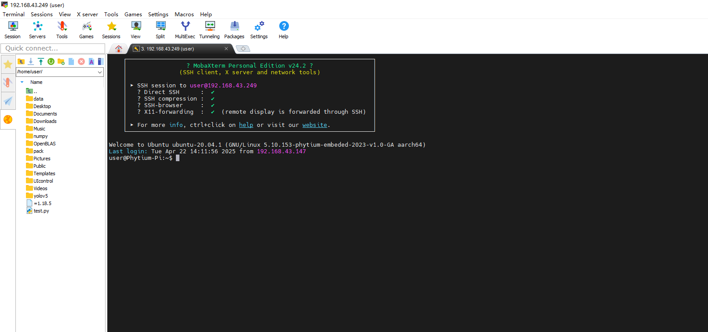
2.4文件传输
**上传：**主机端直接拖拽文件到你想要放的地方即可
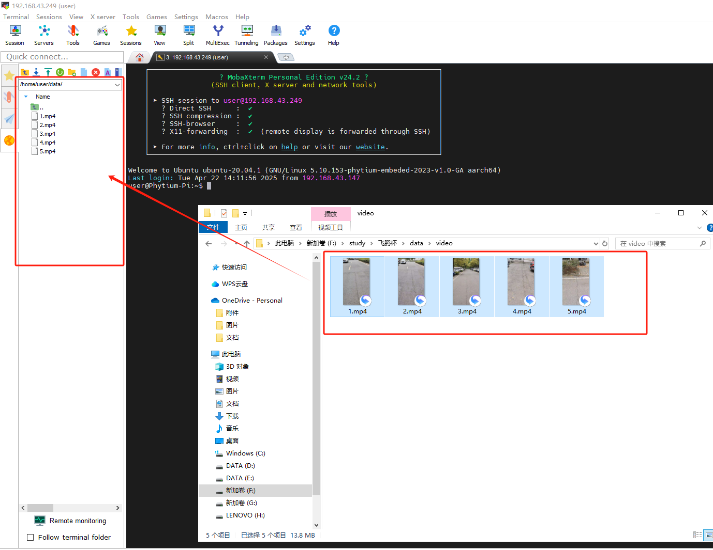
**下载：**点击对应的文件右键选择Download即可
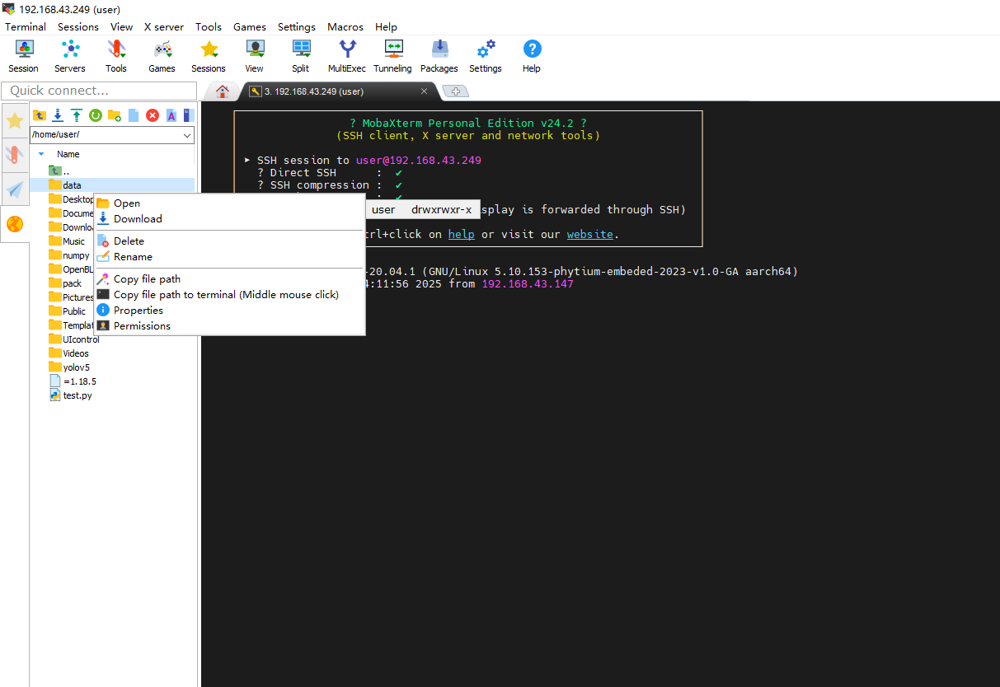